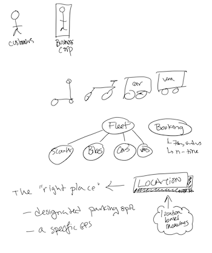
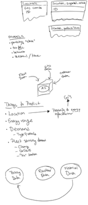
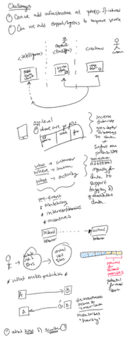
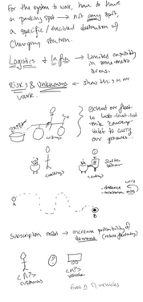

graph TD
subgraph "MobilityCorp"
A[Customer] -- Uses --> B(Mobility Platform);
B -- Manages Fleet & Staff --> C{AI Decision Engine};
C -- Provides Suggestions --> D[Staff/Logistics];
B -- Processes Payments via --> E(Payment Gateway);
B -- Uses Location Data from --> F(Mapping & GPS Service);
end
style A fill:#a9d1f7,stroke:#333,stroke-width:2px
style D fill:#a9d1f7,stroke:#333,stroke-width:2px
Brainstorm 2
RAW Notes from Brainstorm #2
Board + Sketches
 
 
AI Summmary
From WPP Open agent
Consolidated Architecture Notes
- Core Entities & Concepts Actors: Customers: The end-users who rent the vehicles. MobilityCorp: The business entity, including staff who perform maintenance and vehicle distribution. Core Domain: Fleet: The collection of all vehicles, composed of different types: Electric Scooters eBikes Electric Cars Electric Vans Booking: The process of reserving a vehicle. Key distinctions: Cars/Vans: Booked up to 7 days in advance for a specific duration. Scooters/Bikes: Booked up to 30 minutes in advance, open-ended rental (up to 12 hours). Location: A critical concept. The primary business challenge is having the “right vehicle” in the “right place”. Vehicles must be returned to designated parking spots. The system needs to track specific GPS locations for all vehicles. A potential feature is to use location-based incentives to guide user behavior.
- Key Challenges & AI Opportunities The main business challenges revolve around prediction and optimization. AI can be applied to address these directly.
Things to Predict:
Demand/Usage: Where and when will customers want specific types of vehicles? This is the core problem of “the right vehicle in the right place.” Location: Predicting popular destinations and high-demand pickup zones. Energy/Charge: Predicting which vehicles will need battery swaps (scooters/bikes) or charging (cars/vans) and prioritizing maintenance routes. Return Behavior: Predicting if a vehicle will be returned late or to the wrong location. Proposed AI-Driven Solutions:
Decision Model: An AI model that takes predictions (demand, energy) as input to make operational decisions, such as: Optimal vehicle distribution routes for staff. Dynamic pricing to incentivize rentals in low-demand areas or returns to high-demand areas. Prioritization of battery swaps. Customer Journey Enhancement: Predictive Booking: Offer to pre-book a vehicle for a user’s regular commute. Incentives: Proactively offer discounts for returning a vehicle to a location where demand is predicted to be high. Subscription Model: Leverage predictability to offer a subscription service, increasing revenue stability and customer loyalty. 3. System & Architectural Considerations High-Level Architecture: The system will interact with external Location-based Services (for mapping and GPS) and Payment Services. Data Pipeline: A robust data pipeline is essential. The flow will be: Historical Data -> Prediction Model -> Decision Model Human-in-the-Loop: Decisions, especially those related to logistics and maintenance, should be presented to staff via a Decision Support interface. The system suggests, the human confirms. Risks & Unknowns: The primary risk is the non-deterministic nature of AI. We must trust our process and data. Model drift: The predictive models must be continuously monitored and retrained as user behavior and city dynamics change. Data quality from the fleet is the foundation of the entire predictive system. Architectural Diagrams (Mermaid) Here are the diagrams based on the sketches, ready for embedding.
System Context Diagram This diagram shows the MobilityCorp system in relation to its users and the external systems it depends on.
Fleet & Booking Model This diagram clarifies the relationship between the fleet, vehicle types, and booking rules.
graph TD
Fleet --> Scooter;
Fleet --> Bike;
Fleet --> Car;
Fleet --> Van;
subgraph Booking Rules
direction LR
Car ---|"Book up to 7 days in advance<br>Fixed duration"| Booking;
Van ---|"Book up to 7 days in advance<br>Fixed duration"| Booking;
Scooter ---|"Book up to 30 mins in advance<br>Open-ended (max 12hr)"| Booking;
Bike ---|"Book up to 30 mins in advance<br>Open-ended (max 12hr)"| Booking;
end
style Fleet fill:#f9f,stroke:#333,stroke-width:2px
AI Prediction & Decision Flow This flowchart illustrates the core data pipeline for the AI-driven functionality.
graph TD
A[Historical Data<br>- Ride history<br>- GPS locations<br>- Time of day/week] --> B(Prediction Model);
B -- Predicts --> C[Future Demand];
B -- Predicts --> D[Vehicle Energy Needs];
C --> E{Decision Model};
D --> E{Decision Model};
E -- Generates --> F[Optimized Staff Routes];
E -- Generates --> G[Dynamic Pricing & Incentives];
subgraph "Outputs"
F --> H(Staff Decision Support UI);
G --> I(Customer App);
end
Customer Journey Enhancement Loop This diagram shows how AI can be used to create a positive feedback loop to encourage repeat usage.
graph TD
subgraph "AI-Enhanced Customer Journey"
A(Detects Regular Commute Pattern) --> B{Offer Predictive Booking};
B -- Accepted --> C(Vehicle Reserved);
C --> D(Successful Trip);
D --> A;
B -- Declined --> E{Offer Incentive for<br>Future Booking};
E --> A;
end